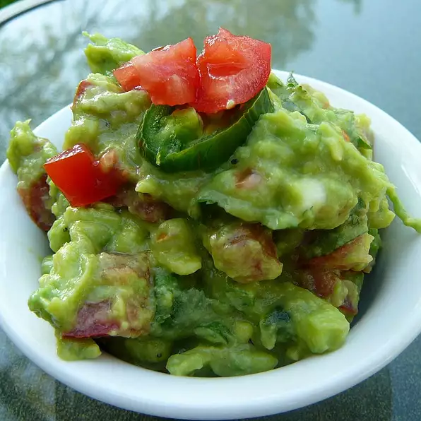

Traditional Mexican Guacamole

Description
This guacamole is great! Whether or not you want it spicy, this guacamole is a dip to die for!
Ingredients
- avocados
- tomatoes
- onions
- cilantro
- lemon juice
- jalapeno pepper
- salt and ground black pepper
Steps
- Mash avocados in a bowl until creamy.
- Mix tomatoes, onion, cilantro, lemon juice, and jalapeno pepper into mashed avocado until well combined; season with salt and black pepper.